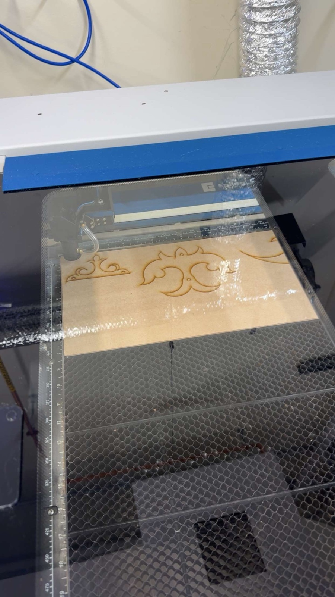

What it is
Four flat plates, each drawn as a piece of Kazakh ornament: curling ram's-horn scrolls (қошқар мүйіз), trefoil tips and a crescent blade. They're pinned together into a single-degree-of-freedom four-bar linkage, so turning one plate makes the whole ornament move.
Why I made it
I wanted to see whether the ornaments I grew up with in Astana could move, instead of sitting flat on felt and carpets.
I drew each plate as a piece of ornament first, and only then placed the pivots, so the mechanism stays hidden inside the pattern. I modelled the plates, chose the hardware and assembled the linkage in SolidWorks.
One plate turns, the rest follow
The four plates form a crank-rocker linkage. One plate stays fixed and holds two pivots. The crescent spins a full circle around one of them, and the scroll plate swings back and forth around the other. The top ornament links the two moving pivots, so it rolls and tilts as the others move, and the silhouette keeps rebuilding itself.
From the motion study, the link lengths are roughly 1 : 2 : 3.3 : 2.7 (crank, rocker, coupler, ground). The shortest plus the longest (4.3) is less than the other two together (4.7). That meets the Grashof condition, which is why the crescent can keep turning all the way round without the linkage locking.
Under the hood
- Plates. Four custom laser-cut parts, each one ornament. They sit in different layers, so they sweep past and over each other without colliding.
- Pivots. Alloy-steel socket head screws act as the pins, in three lengths for the different stack heights (McMaster-Carr 91290A150, 91290A170, 91290A176).
- Spacing. Aluminium unthreaded spacers (94669A002, 94669A014) hold the layers apart, so the plates turn freely instead of rubbing.
- Retention. Stainless washers (93475A230) and nylon-insert locknuts (94645A101) hold each joint together without clamping it tight. The nylon insert keeps the nut from backing off as the joint rotates.
Cut from one sheet
I cut the plates from a single sheet of MDF on an Epilog laser cutter, nesting the ornaments side by side to use as little material as possible. The pivot holes are cut in the same pass, so they line up exactly with the CAD.
